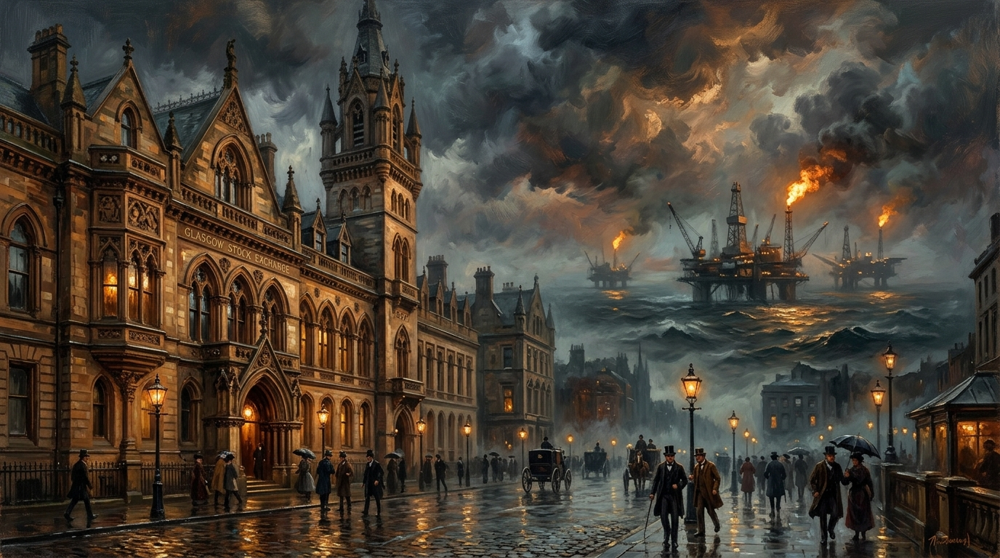

The Plunder of Our Exchange: When Glasgow’s Future Was Sold for a Slip of Paper
How the quiet 1973 bureaucratic absorption of the Glasgow Stock Exchange severed Scotland’s financial autonomy at the precise hour North Sea oil was struck.

“They plundered us. Not with cannons and redcoats, but with pens and paper. They knew that if the oil was going to be ‘British’ oil, if its benefits were to flow to the Treasury in London, they couldn't have a Scottish stock exchange setting the price, floating the companies, and reaping the listing fees. The cart was fully assembled, and then they stole the horse.” — Trevor Swistchew
The Sovereign Financial Ledger • 1844 to 1973
Forensics of the 1973 LSE Merger, North Sea Black Gold & The Sovereign Wealth GapThe Uncanny Synchronization: 1971 Centralisation to 1973 Absorption
Look at it. Stand on Nelson Mandela Place and look at it. That magnificent five-storey cathedral of commerce, the one John Burnett designed with such ambition in 1877. It’s still there, but don’t be fooled. Its soul was ripped out. Today you might buy a dress or a phone where our forefathers once bought and sold the very future of this nation. And that, Glasgow, is a metaphor you can’t ignore.
That building was ours. It was the heart of the Glasgow Stock Exchange, founded in 1844 by 28 of our own. It wasn't just a place for the wealthy to count their gold. It was the engine room of Scottish enterprise. It was where the capital of this great industrial city was raised, where the wealth we generated was managed, for us, by us. By 1930, nearly 300 members were trading there. Banks, insurance companies, and the great industries of the Clyde all answered to a bell that rang in Glasgow.
And then, in a quiet, bureaucratic whisper in 1973, it was gone.
They call it a "merger." They call it "consolidation." Don’t you believe it. That was the year our stock exchange, along with Edinburgh’s, Dundee’s, and Aberdeen’s, was formally absorbed into the London Stock Exchange. They tell us it was part of a UK-wide trend to cut costs, to create a "single, powerful" market. A market that would, conveniently, be run not from Buchanan Street, but from the City of London.
But let’s look at the date again. 1973.
Do you know what else happened in 1973? They struck oil. Vast, black, liquid fortunes were discovered beneath the North Sea. The very same year our ability to control our own financial destiny was quietly signed away, the greatest economic prize of the 20th century was found on our doorstep.
Do you really believe that’s a coincidence?
Just two years earlier, in 1971, all of Scotland’s stock exchange operations had been centralised right here in that Glasgow building. We had a unified Scottish exchange. We had the expertise. We had the infrastructure. We were poised, ready to trade. And then, at the exact moment the black gold was discovered, the Westminster government ensured that the mechanism to trade it would not be in Scottish hands. The cart was fully assembled, and then they stole the horse.
They plundered us. Not with cannons and redcoats, but with pens and paper. They knew that if the oil was going to be "British" oil, if its benefits were to flow to the Treasury in London, they couldn't have a Scottish stock exchange setting the price, floating the companies, and reaping the listing fees. They couldn't have the profits landing here first.
They framed it as modernisation. But what it really was, was asset stripping. They took the proud Glasgow Stock Exchange, with its 128 year history, and they turned it into a branch office. A provincial outpost taking orders from the capital.
And the result? For decades, the revenues from Scottish oil - our oil - were funnelled into a UK-wide pot. We were told it would benefit everyone. But look at Glasgow. Look at the communities that built the rigs and serviced the boats. Where is our sovereign wealth fund, the one any independent nation with our resources would have built? Norway looked at what we had and built a trillion-dollar nest egg for its people. We got a few years of tax breaks and a hole in the budget when the price dropped.
The attempts to bring it back, the calls for a new exchange in 2010, the "Project Heather" scheme in 2018 that collapsed because the establishment couldn't bear to see it succeed, they are the death throes of a body that was poisoned in 1973. They are the proof that the need, the desire, the right to control our own wealth never died. It’s still there, buried under the rubble of broken promises and political expediency.
So the next time you walk past that building on Nelson Mandela Place, don't just see the shops. See the ghost of what we had. See the thousands of deals that should have been done there, for Scottish companies, with Scottish capital, for the benefit of the Scottish people. See the oil money that flowed past our door, destined for London, because the door had been nailed shut by the very people who wanted what was behind it.
They didn't just merge our stock exchange. They locked it, threw away the key, and spent the next fifty years spending our inheritance. Never forget that. And never stop demanding what was, and always will be, ours.